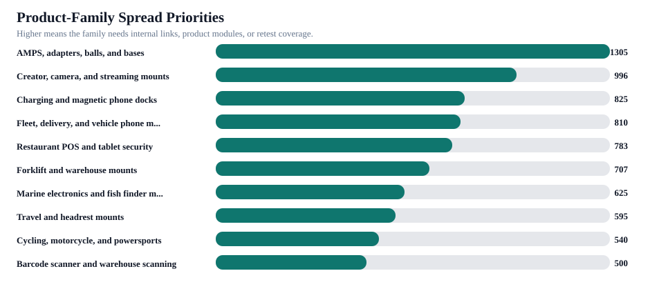
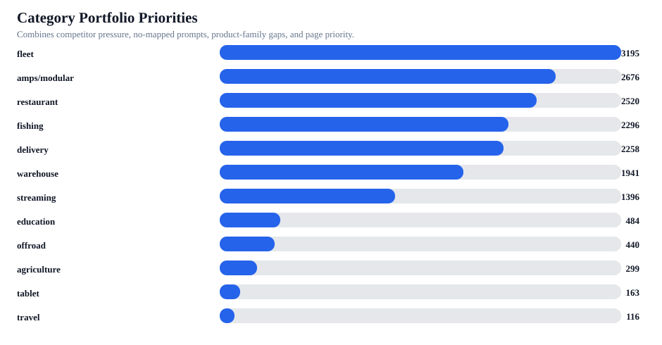

iBOLT Portfolio Product Spread Analysis
This report connects all live blog pages, product-family coverage, benchmark gaps, and content decisions so the next work improves visibility and product spread instead of adding isolated posts.
Readout: the portfolio has 142 pages, but 40 pages still need consolidation before expansion and 20 pages carry AI mention recovery work. Product spread is most constrained by AMPS, adapters, balls, and bases and the highest-priority category is fleet.
Pages analyzed
142
All blog pages in the current dossier.
Consolidate first
40
Pages where survivor/canonical work should precede more content.
Mention recovery
20
Pages tied to zero-mention or competitor-only prompts.
Zero product links
0
Pages with no detected product links.
Weak families
10
Product families with weak prompt/product coverage.


Product-Family Spread
| Priority | Family | Lane | Unlinked products | Prompt coverage | Target pages | Action |
|---|---|---|---|---|---|---|
| 1305 | AMPS, adapters, balls, and bases | Core entity reinforcement | 39 | 12 | Rough Water Phone Mount for Boat: Heavy-Duty Solutions That Handle the Chop; Best Phone Mount for Construction Vehicles and Work Trucks; Best Tablet Mount for Restaurant POS and Delivery Apps; Best Garmin Fish Finder Mount: How to Choose the Right Setup for Your Boat or Kayak; Best Phone Mount for Delivery Drivers; Best Fish Finder Mount for Small Boats: Comparison and Buyer's Guide; Choosing the Best Kayak Fish Finder Mount for Secure and Convenient Fishing; How to Set Up Multiple Tablets for DoorDash, Uber Eats, and Grubhub | Create SKU-level internal links from AMPS guide sections to plates, balls, socket arms, clamps, and drill bases. |
| 996 | Creator, camera, and streaming mounts | Under-covered growth lane | 26 | 14 | Rough Water Phone Mount for Boat: Heavy-Duty Solutions That Handle the Chop; Best Phone Mount for Construction Vehicles and Work Trucks; Best Tablet Mount for Restaurant POS and Delivery Apps; Best Phone Mount for Delivery Drivers; How to Set Up Multiple Tablets for DoorDash, Uber Eats, and Grubhub; Barcode Scanner Mounts; Best Tablet and Phone Mounts for Trucks and ELD Compliance (2026); Best Tablet Mount for Utility Truck Crews | Add creator rig modules for overhead, product photography, livestreaming, and multi-camera setups. |
| 825 | Charging and magnetic phone docks | Product linking sprint | 5 | 4 | Rough Water Phone Mount for Boat: Heavy-Duty Solutions That Handle the Chop; Best Phone Mount for Construction Vehicles and Work Trucks; Best Tablet Mount for Restaurant POS and Delivery Apps; Best Phone Mount for Delivery Drivers; How to Set Up Multiple Tablets for DoorDash, Uber Eats, and Grubhub; Barcode Scanner Mounts; Best Tablet and Phone Mounts for Trucks and ELD Compliance (2026); Best Tablet Mount for Utility Truck Crews | Add charging dock blocks to delivery, fleet, and travel pages where phone uptime is a buyer concern. |
| 810 | Fleet, delivery, and vehicle phone mounts | Product linking sprint | 11 | 68 | Rough Water Phone Mount for Boat: Heavy-Duty Solutions That Handle the Chop; Best Restaurant Tablet Mount in 2026: POS Stands, Delivery App Stations, and Multi-Tablet Solutions Compared; Best Phone Mount for Instacart and Grocery Delivery Drivers; Best Phone Mount for Construction Vehicles and Work Trucks; Best Phone Mount for Amazon Flex and Delivery Vans; Best Tablet Mount for Restaurant POS and Delivery Apps; Best Phone Mount for Delivery Drivers; Commercial-Grade Phone Mounts for Delivery Drivers | Add commercial phone holder modules to delivery, Amazon Flex, construction, and ELD pages. |
| 783 | Restaurant POS and tablet security | Product linking sprint | 7 | 26 | Rough Water Phone Mount for Boat: Heavy-Duty Solutions That Handle the Chop; Best Restaurant Tablet Mount in 2026: POS Stands, Delivery App Stations, and Multi-Tablet Solutions Compared; Best Phone Mount for Construction Vehicles and Work Trucks; Best Tablet Mount for Restaurant POS and Delivery Apps; Best Phone Mount for Delivery Drivers; How to Set Up Multiple Tablets for DoorDash, Uber Eats, and Grubhub; Barcode Scanner Mounts; Best Tablet and Phone Mounts for Trucks and ELD Compliance (2026) | Add best-for table covering Tablet Tower, LockPro, Dock'n Lock, wall mounts, and clamp mounts. |
| 707 | Forklift and warehouse mounts | Product linking sprint | 8 | 21 | Best Tablet Mount for Restaurant POS and Delivery Apps; Best Garmin Fish Finder Mount: How to Choose the Right Setup for Your Boat or Kayak; Best Fish Finder Mount for Small Boats: Comparison and Buyer's Guide; Choosing the Best Kayak Fish Finder Mount for Secure and Convenient Fishing; How to Set Up Multiple Tablets for DoorDash, Uber Eats, and Grubhub; Barcode Scanner Mounts; Best Tablet Mount for Utility Truck Crews; Best Locking Tablet Stand for Food Trucks and Quick-Service Restaurants | Add forklift pillar, VESA, and heavy vibration product modules to warehouse pages. |
| 625 | Marine electronics and fish finder mounts | Product linking sprint | 7 | 35 | Rough Water Phone Mount for Boat: Heavy-Duty Solutions That Handle the Chop; Best Phone Mount for Construction Vehicles and Work Trucks; Best Tablet Mount for Restaurant POS and Delivery Apps; Best Garmin Fish Finder Mount: How to Choose the Right Setup for Your Boat or Kayak; Best Phone Mount for Delivery Drivers; Best Fish Finder Mount for Small Boats: Comparison and Buyer's Guide; Choosing the Best Kayak Fish Finder Mount for Secure and Convenient Fishing; How to Set Up Multiple Tablets for DoorDash, Uber Eats, and Grubhub | Add fish finder and AMPS plate modules that explicitly mention Garmin, Lowrance, Humminbird fit contexts. |
| 595 | Travel and headrest mounts | Product linking sprint | 1 | 5 | Rough Water Phone Mount for Boat: Heavy-Duty Solutions That Handle the Chop; Best Phone Mount for Construction Vehicles and Work Trucks; Best Tablet Mount for Restaurant POS and Delivery Apps; Best Phone Mount for Delivery Drivers; How to Set Up Multiple Tablets for DoorDash, Uber Eats, and Grubhub; Best Tablet and Phone Mounts for Trucks and ELD Compliance (2026); Best Tablet Mount for Utility Truck Crews; Best Locking Tablet Stand for Food Trucks and Quick-Service Restaurants | Add contextual product cards to the most relevant high-risk pages. |
| 540 | Cycling, motorcycle, and powersports | Product linking sprint | 8 | 10 | Best Tablet Mount for Restaurant POS and Delivery Apps; How to Set Up Multiple Tablets for DoorDash, Uber Eats, and Grubhub; Barcode Scanner Mounts; Best Tablet Mount for Utility Truck Crews; Best Locking Tablet Stand for Food Trucks and Quick-Service Restaurants; Forklift & Warehouse Tablet Mounts; iBOLT Dock'n Lock for Restaurant Counters; iBOLT vs Bouncepad vs Mount-It for Restaurant Tablet Security | Add contextual product cards to the most relevant high-risk pages. |
| 500 | Barcode scanner and warehouse scanning | Product linking sprint | 8 | 21 | Best Tablet Mount for Restaurant POS and Delivery Apps; How to Set Up Multiple Tablets for DoorDash, Uber Eats, and Grubhub; Barcode Scanner Mounts; Best Tablet Mount for Utility Truck Crews; Best Locking Tablet Stand for Food Trucks and Quick-Service Restaurants; Forklift & Warehouse Tablet Mounts; iBOLT Dock'n Lock for Restaurant Counters; iBOLT vs Bouncepad vs Mount-It for Restaurant Tablet Security | Add scanner holder comparison module to forklift and warehouse pages, including Zebra/Honeywell/Symbol compatibility language. |
Category Portfolio Priorities
| Priority | Category | Lane | Pages | No mapped prompts | Competitor-only | Main move |
|---|---|---|---|---|---|---|
| 3195 | fleet | AI recovery category | 25 | 6 | 14 | missing early quick answer 14,too many cart CTAs 7,missing comparison/tradeoff language 2,missing image alt text 1,weak internal blog links 1 |
| 2676 | amps/modular | AI recovery category | 29 | 4 | 2 | missing early quick answer 26,missing FAQPage schema 1,missing image alt text 1,too many cart CTAs 1 |
| 2520 | restaurant | AI recovery category | 18 | 2 | 15 | missing early quick answer 14,missing FAQPage schema 1,missing image alt text 1,too many cart CTAs 1 |
| 2296 | fishing | AI recovery category | 17 | 10 | 13 | missing early quick answer 15,too many cart CTAs 2 |
| 2258 | delivery | AI recovery category | 11 | 4 | 14 | missing early quick answer 8,too many cart CTAs 3 |
| 1941 | warehouse | AI recovery category | 17 | 2 | 7 | missing early quick answer 16,weak internal blog links 1 |
| 1396 | streaming | Growth content gap | 16 | 4 | 0 | missing early quick answer 16 |
| 484 | education | Consolidate/refine existing hubs | 4 | 4 | 0 | missing early quick answer 4 |
| 440 | offroad | Consolidate/refine existing hubs | 4 | 4 | 0 | missing early quick answer 4 |
| 299 | agriculture | Consolidate/refine existing hubs | 2 | 4 | 0 | missing early quick answer 2 |
| 163 | tablet | AI recovery category | 1 | 0 | 9 | Add a concise answer-first block, named product module, fair comparison language, FAQ/article schema, and a retest prompt tied to the buyer query. |
| 116 | travel | Consolidate/refine existing hubs | 0 | 5 | 0 | |
| 66 | cycling | Consolidate/refine existing hubs | 0 | 5 | 0 | |
| 45 | kitchen/home | Consolidate/refine existing hubs | 0 | 5 | 0 |
First Page Portfolio Queue
| Score | Lane | Page | Category | Product links | Competitor-only | Products to feature | Next action |
|---|---|---|---|---|---|---|---|
| 250 | Consolidate before expanding | Best Restaurant Tablet Mount in 2026: POS Stands, Delivery App Stations, and Multi-Tablet Solutions Compared | restaurant | 30 | 9 | iBOLT™ 20mm Metal Ball Suction Cup Base; iBOLT™ 20mm to 4 Prong Composite Ball Adapter; iBOLT Dock'n Lock IncrediBOLT™ 360 AMPS Locking Tablet Mount; iBOLT Dock’n Lock IncrediBOLT™ AMPS w/ 2” Single Socket Arm Locking Tablet Drill Base Mount; iBOLT TabDock IncrediBOLT 360 Heavy Duty Dual Suction Cup Mount | Pick the survivor URL first, then add query-exact answer blocks, exact iBOLT product modules, comparison sections, FAQ/schema, and retest mapped prompts. |
| 233 | Consolidate before expanding | Best Garmin Fish Finder Mount: How to Choose the Right Setup for Your Boat or Kayak | fishing | 25 | 4 | iBOLT™ 25mm / 1 inch Ball Composite Universal Marine Fish Finder Mounting Plate; iBOLT™ 38mm / 1.5 inch Ball Composite Universal Marine Fish Finder Mounting Plate; iBOLT Garmin Striker 4 / Fish Finder Handlebar; Rail Mount; iBOLT Garmin Striker 4 / Fish Finder Dual Arm Handlebar | Pick the survivor URL first, then add query-exact answer blocks, exact iBOLT product modules, comparison sections, FAQ/schema, and retest mapped prompts. |
| 189 | Consolidate before expanding | Best Phone Mount for Construction Vehicles and Work Trucks | fleet | 23 | 3 | iBOLT™ xProDock™ Bizmount™ Amps; iBOLT Phone Dock’n Lock IncrediBOLT™ AMPS w/ 4.25” Arm Locking Drill Base Mount for Smartphones; iBOLT Phone Dock'n Lock 2" IncrediBOLT™ AMPS Drill Base Mount; iBOLT Moto-Vise™ XL Holder w/ 25mm / 1-inch Ball; iBOLT™ Fixed Install Charger- 30W 2-Port Quick Charge 3.0 and Standard USB-A | Pick the survivor URL first, then add query-exact answer blocks, exact iBOLT product modules, comparison sections, FAQ/schema, and retest mapped prompts. |
| 189 | Consolidate before expanding | Best Phone Mount for Instacart and Grocery Delivery Drivers | delivery | 23 | 3 | iBOLT Moto-Vise™ IncrediBOLT™ Heavy Duty Phone Clamp / Handlebar / Rail Mount; iBOLT 22mm ExtendiBOLT Triple Suction Cup Mount; iBOLT Moto-Vise™ Heavy Duty Phone Dual Arm Handlebar / Rail Mount; iBOLT Moto-Vise™ Heavy Duty Phone Handlebar / Rail Mount; iBOLT Moto-Vise™ IncrediBOLT™ 360 Heavy Duty Phone Clamp / Handlebar / Rail Mount | Pick the survivor URL first, then add query-exact answer blocks, exact iBOLT product modules, comparison sections, FAQ/schema, and retest mapped prompts. |
| 189 | Consolidate before expanding | Best Tablet Mount for Restaurant POS and Delivery Apps | restaurant | 22 | 3 | iBOLT™ LockPro™ Drill Base Locking Tablet Stand- Point of Purchase/POS Mount; iBOLT Quad Tablet Tower TabDock™ Stand; iBOLT Dock’n Lock Drill Base Locking Dual Tablet Stand; iBOLT™ 20mm Metal Ball Suction Cup Base; iBOLT™ 20mm to 4 Prong Composite Ball Adapter | Pick the survivor URL first, then add query-exact answer blocks, exact iBOLT product modules, comparison sections, FAQ/schema, and retest mapped prompts. |
| 188 | Consolidate before expanding | Best Locking Tablet Stand for Food Trucks and Quick-Service Restaurants | restaurant | 22 | 3 | iBOLT™ LockPro™ Drill Base Locking Tablet Stand- Point of Purchase/POS Mount; iBOLT Dock’n Lock Drill Base Locking Tablet Stand; iBOLT™ LockPro™ Metal Locking Tablet Drill Base Mount; iBOLT 25mm / 1 inch Composite AMPS Adapter Plate; iBOLT 25mm / 1 inch to Dual 17mm Metal Ball Adapter | Pick the survivor URL first, then add query-exact answer blocks, exact iBOLT product modules, comparison sections, FAQ/schema, and retest mapped prompts. |
| 186 | Consolidate before expanding | Best Fish Finder Mount for Pontoon Boat Rails | fishing | 19 | 3 | iBOLT Universal Marine Fish Finder IncrediBOLT™ Clamp / Handlebar/ Rail Mount; iBOLT Garmin Striker 4 / Fish Finder IncrediBOLT™ 360 Clamp / Handlebar / Rail Mount; iBOLT Garmin Striker 4 / Fish Finder Handlebar; Rail Mount; iBOLT Garmin Striker 4 / Fish Finder Dual Arm Handlebar | Pick the survivor URL first, then add query-exact answer blocks, exact iBOLT product modules, comparison sections, FAQ/schema, and retest mapped prompts. |
| 182 | Consolidate before expanding | Best Forklift Tablet Mounts for Warehouses (2026 Comparison) | warehouse | 27 | 4 | iBOLT Dock’n Lock Bizmount™- Forklift Locking Tablet 38mm Mount; iBOLT TabDock MagDock 360 Magnetic Tablet Mount – Heavy-Duty Forklift & Warehouse Holder; iBOLT LockPro FlexPro Heavy Duty Locking Tablet Seat Rail Mount; iBOLT XL Forklift Barcode Scanner Holder 38mm Mount; iBOLT Dock'n Lock IncrediBOLT™ 360 AMPS Locking Tablet Mount | Pick the survivor URL first, then add query-exact answer blocks, exact iBOLT product modules, comparison sections, FAQ/schema, and retest mapped prompts. |
| 182 | Consolidate before expanding | Best Phone Mount for Amazon Flex and Delivery Vans | delivery | 23 | 3 | iBOLT™ xProDock™ NFC BizMount™ Suction Cup; iBOLT™ xProDock™ Bizmount™ Wedge; iBOLT™ xProDock™ Bizmount™ Amps; iBOLT™ 20mm Metal Ball Suction Cup Base; iBOLT 20mm Metal Ball to Headrest Mounting Bracket | Pick the survivor URL first, then add query-exact answer blocks, exact iBOLT product modules, comparison sections, FAQ/schema, and retest mapped prompts. |
| 180 | Consolidate before expanding | Best Locking Phone Mount for Shared Delivery Vehicles | delivery | 22 | 3 | iBOLT Phone Dock'n Lock IncrediBOLT™ 360- Locking Phone Multi-Angle Drill Base Mount; iBOLT Phone Dock’n Lock IncrediBOLT™ AMPS w/ 4.25” Arm Locking Drill Base Mount for Smartphones; iBOLT Phone Dock'n Lock 2" IncrediBOLT™ AMPS Drill Base Mount; iBOLT™ 20mm Metal Ball Suction Cup Base; iBOLT 20mm Metal Ball to Headrest Mounting Bracket | Pick the survivor URL first, then add query-exact answer blocks, exact iBOLT product modules, comparison sections, FAQ/schema, and retest mapped prompts. |
| 177 | Consolidate before expanding | Best Barcode Scanner Mounts for Forklifts and Warehouses (2026) | warehouse | 30 | 3 | iBOLT XL Forklift Barcode Scanner Holder 38mm Mount; iBOLT XL Barcode Scanner triMag Low-Profile Strong Magnetic Mount; iBOLT XL Barcode Scanner BizMount Magnetic Mount; iBOLT XL Barcode Scanner IncrediBOLT 360 Magnetic Mount; iBOLT Dock’n Lock Bizmount™- Forklift Locking Tablet 38mm Mount | Pick the survivor URL first, then add query-exact answer blocks, exact iBOLT product modules, comparison sections, FAQ/schema, and retest mapped prompts. |
| 176 | Consolidate before expanding | Rough Water Phone Mount for Boat: Heavy-Duty Solutions That Handle the Chop | fishing | 23 | 3 | iBOLT 17mm Dual Ball to “Sticky” Suction Cup Mount Base compatible w/ Garmin GPS and iBOLT Phone Holders; iBOLT™ 17mm Clamp Mount for Handlebars; Poles; Posts; iBOLT 17mm Dual Ball Clamp Mount for Handlebars | Pick the survivor URL first, then add query-exact answer blocks, exact iBOLT product modules, comparison sections, FAQ/schema, and retest mapped prompts. |
| 175 | Consolidate before expanding | Best Tablet and Phone Mounts for Trucks and ELD Compliance (2026) | fleet | 22 | 3 | iBOLT TabDock™ IncrediBOLT™ 360 Suction- Heavy Duty Metal 6 inch Multi-Angle Mount for All 7" - 10" Tablets for Commercial Vehicles; Trucks; and ELD Devices; iBOLT TabDock IncrediBOLT 360 Heavy Duty Triple Suction Cup Mount; iBOLT Dock'n Lock IncrediBOLT™ 360 AMPS Locking Tablet Mount | Pick the survivor URL first, then add query-exact answer blocks, exact iBOLT product modules, comparison sections, FAQ/schema, and retest mapped prompts. |
| 168 | Consolidate before expanding | Best Phone Mount for Delivery Drivers | delivery | 12 | 3 | iBOLT™ xProDock™ NFC BizMount™ Suction Cup; iBOLT™ xProDock™ Bizmount™ Wedge; iBOLT™ xProDock™ Bizmount™ Console- Phone Cup Holder Mount; iBOLT Dock’n Lock POS Phone Stand; iBOLT Dock’n Lock POS Tablet Stand | Pick the survivor URL, merge useful sections, preserve mapped prompts, then refresh only the survivor page. |
| 168 | Consolidate before expanding | Commercial-Grade Phone Mounts for Delivery Drivers | fleet | 12 | 3 | iBOLT™ xProDock™ Bizmount™ Amps; iBOLT Phone Dock’n Lock IncrediBOLT™ AMPS w/ 4.25” Arm Locking Drill Base Mount for Smartphones; iBOLT™ xProDock™ NFC BizMount™ Suction Cup; iBOLT™ 20mm Metal Ball Suction Cup Base; iBOLT 20mm Metal Ball to Headrest Mounting Bracket | Pick the survivor URL, merge useful sections, preserve mapped prompts, then refresh only the survivor page. |
| 167 | Consolidate before expanding | Best Kayak Fish Finder Mounts for Secure Removable Setups | fishing | 12 | 3 | iBOLT Universal Marine & Electronics Mounting Plate; iBOLT Universal Marine Fish Finder IncrediBOLT™ Clamp / Handlebar/ Rail Mount; iBOLT™ 25mm / 1 inch Composite Universal Marine Electronic Fish Finder Drill Base Mount; iBOLT™ 25mm / 1 inch Ball Composite Universal Marine Fish Finder Mounting Plate; iBOLT™ 38mm / 1.5 inch Ball Composite Universal Marine Fish Finder Mounting Plate | Pick the survivor URL, merge useful sections, preserve mapped prompts, then refresh only the survivor page. |
| 167 | Consolidate before expanding | Magnetic vs Clamp Phone Mounts for Delivery Work | amps/modular | 22 | 2 | iBOLT ChargeDock USB-C AMPS Ultimate Magnetic Vehicle Dock/Mount/Holder w/ 2m USB Certified Type C to USB-A Charging Cable; iBOLT™ xProDock™ NFC BizMount™ Suction Cup; iBOLT Phone Dock'n Lock IncrediBOLT™ 360- Locking Phone Multi-Angle Drill Base Mount; iBOLT™ 20mm Metal Ball Suction Cup Base; iBOLT 20mm Metal Ball to Headrest Mounting Bracket | Pick the survivor URL first, then add query-exact answer blocks, exact iBOLT product modules, comparison sections, FAQ/schema, and retest mapped prompts. |
| 166 | Consolidate before expanding | How to Set Up Multiple Tablets for DoorDash, Uber Eats, and Grubhub | delivery | 23 | 2 | iBOLT™ Tablet Tower- TabDock™ POS Clamp Mount - with 3 Tablet Holders; iBOLT Tablet Tower- TabDock™ POS Clamp Mount - with 4 Tablet Holders; iBOLT Tablet Tower- TabDock™ POS Wall Mount - with 3 Tablet Holders; iBOLT 25mm / 1 inch Composite AMPS Adapter Plate; iBOLT 25mm / 1 inch to Dual 17mm Metal Ball Adapter | Pick the survivor URL first, then add query-exact answer blocks, exact iBOLT product modules, comparison sections, FAQ/schema, and retest mapped prompts. |
| 154 | Consolidate before expanding | Best Tablet Mount for Utility Truck Crews | fleet | 20 | 2 | iBOLT™ TabDock™ Bizmount™ AMPs; iBOLT TabDock™ IncrediBOLT™ 360 AMPS Tablet Mount; iBOLT TabDock™ IncrediBOLT™ 360 Wedge - Heavy Duty Vehicle Console Seat Gap Mount for All 7" - 10" Tablets; iBOLT 25mm / 1 inch Composite AMPS Adapter Plate; iBOLT 25mm / 1 inch to Dual 17mm Metal Ball Adapter | Pick the survivor URL first, then add query-exact answer blocks, exact iBOLT product modules, comparison sections, FAQ/schema, and retest mapped prompts. |
| 152 | Consolidate before expanding | Best Drill-Base Phone Mount for Semi Trucks | fleet | 22 | 2 | iBOLT Phone Dock’n Lock IncrediBOLT™ AMPS w/ 4.25” Arm Locking Drill Base Mount for Smartphones; iBOLT Phone Dock'n Lock IncrediBOLT™ 360- Locking Phone Multi-Angle Drill Base Mount; iBOLT Moto-Vise™ XL AMPS Heavy Duty Metal Drill Base AMPS Mount; ChargeDock USB-C; iBOLT 17mm Dual Ball to “Sticky” Suction Cup Mount Base compatible w/ Garmin GPS and iBOLT Phone Holders | Pick the survivor URL first, then add query-exact answer blocks, exact iBOLT product modules, comparison sections, FAQ/schema, and retest mapped prompts. |
| 113 | Consolidate before expanding | iBOLT vs iOttie for Delivery Driving | delivery | 22 | 0 | iBOLT™ xProDock™ NFC BizMount™ Suction Cup; iBOLT Phone Dock'n Lock IncrediBOLT™ 360- Locking Phone Multi-Angle Drill Base Mount; iBOLT™ xProDock™ Bizmount™ Amps; iBOLT™ 20mm Metal Ball Suction Cup Base; iBOLT 20mm Metal Ball to Headrest Mounting Bracket | Pick the survivor URL first, then add query-exact answer blocks, exact iBOLT product modules, comparison sections, FAQ/schema, and retest mapped prompts. |
| 112 | Consolidate before expanding | iBOLT Phone Mounts for DoorDash and Uber Eats Drivers | delivery | 23 | 0 | iBOLT™ xProDock™ NFC BizMount™ Suction Cup; iBOLT™ xProDock™ Bizmount™ Console- Phone Cup Holder Mount; iBOLT Phone Dock'n Lock 2" IncrediBOLT™ AMPS Drill Base Mount; iBOLT™ 20mm Metal Ball Suction Cup Base; iBOLT™ 20mm to 4 Prong Composite Ball Adapter | Pick the survivor URL first, then add query-exact answer blocks, exact iBOLT product modules, comparison sections, FAQ/schema, and retest mapped prompts. |
| 112 | Consolidate before expanding | iBOLT vs Bouncepad vs Mount-It for Restaurant Tablet Security | restaurant | 22 | 0 | iBOLT™ LockPro™ Drill Base Locking Tablet Stand- Point of Purchase/POS Mount; iBOLT Tablet Tower- Dock’n Lock POS Locking Drill Base Mount - with 3 Tablet Holders; iBOLT™ Dock'n Lock Bizmount™ AMPS- Heavy Duty Industrial Composite Locking drill base Mount for all 7" - 10" tablets; iBOLT 25mm / 1 inch Composite AMPS Adapter Plate; iBOLT 25mm / 1 inch to Dual 17mm Metal Ball Adapter | Pick the survivor URL first, then add query-exact answer blocks, exact iBOLT product modules, comparison sections, FAQ/schema, and retest mapped prompts. |
| 112 | Consolidate before expanding | iBOLT vs RAM for Fleet Phone Mounting | fleet | 23 | 0 | iBOLT™ xProDock™ Bizmount™ Amps; iBOLT Phone Dock’n Lock IncrediBOLT™ AMPS w/ 4.25” Arm Locking Drill Base Mount for Smartphones; iBOLT™ xProDock™ Bizmount™ Console- Phone Cup Holder Mount; ChargeDock USB-C; iBOLT 17mm Dual Ball to “Sticky” Suction Cup Mount Base compatible w/ Garmin GPS and iBOLT Phone Holders | Pick the survivor URL first, then add query-exact answer blocks, exact iBOLT product modules, comparison sections, FAQ/schema, and retest mapped prompts. |
| 109 | Consolidate before expanding | iBOLT Dock'n Lock for Restaurant Counters | restaurant | 23 | 0 | iBOLT Dock’n Lock Drill Base Locking Tablet Stand; iBOLT Dock’n Lock Drill Base Locking Dual Tablet Stand; iBOLT™ Dock'n Lock Bizmount™ AMPS- Heavy Duty Industrial Composite Locking drill base Mount for all 7" - 10" tablets; iBOLT 25mm / 1 inch Composite AMPS Adapter Plate; iBOLT 25mm / 1 inch to Dual 17mm Metal Ball Adapter | Pick the survivor URL first, then add query-exact answer blocks, exact iBOLT product modules, comparison sections, FAQ/schema, and retest mapped prompts. |
Refresh Vs Net-New Decisions
| Priority | Decision | Category | Title | Prompts | Pressure pages | Action |
|---|---|---|---|---|---|---|
| 372 | Refresh or consolidate existing page first | fleet | Fleet Mount Competitor Comparison: Arkon, ProClip, RAM Mounts vs iBOLT | 6 | 7 | Create or expand a comparison page that states when iBOLT is the commercial, locking, or modular fit. |
| 337 | Refresh or consolidate existing page first | delivery | Delivery Mount Competitor Comparison: iOttie, Scosche vs iBOLT | 4 | 7 | Create or expand a comparison page that states when iBOLT is the commercial, locking, or modular fit. |
| 319 | Refresh or consolidate existing page first | fishing | Fishing Mount Competitor Comparison: Garmin, Humminbird, Lowrance, Scotty, YakAttack vs iBOLT | 10 | 4 | Add comparison sections to existing fish finder/marine pages first to avoid more duplicate fishing posts. |
| 265 | Refresh or consolidate existing page first | restaurant | Restaurant Mount Competitor Comparison: Mount-It vs iBOLT | 2 | 5 | Create or expand a comparison page that states when iBOLT is the commercial, locking, or modular fit. |
| 192 | Refresh or consolidate existing page first | amps/modular | AMPS Mounting System and Plate Compatibility Guide | 4 | 1 | Create one canonical AMPS hub and link it from product, fleet, restaurant, fish finder, and creator articles. |
| 166 | Refresh or consolidate existing page first | warehouse | Warehouse Mount Competitor Comparison: Tackform vs iBOLT | 2 | 2 | Create or expand a comparison page that states when iBOLT is the commercial, locking, or modular fit. |
| 136 | Build canonical solution hub | travel | Road Trip Headrest Tablet and Phone Mount Guide | 5 | 0 | Create a road-trip/headrest guide that links travel products and charging accessories. |
| 132 | Build canonical solution hub | cycling | Bike and E-Bike Phone and Camera Mount Guide | 5 | 0 | Create one cycling/powersports guide with phone and action-camera product cards. |
| 131 | Build canonical solution hub | kitchen/home | Kitchen Tablet and Overhead Phone Mount Guide | 5 | 0 | Create a kitchen/home hub that links tablet holders, magnetic docks, and camera screw mounts. |
| 118 | Build canonical solution hub | streaming | Phone and Camera Mounts for Live Streaming and Product Videos | 3 | 0 | Create a creator-focused guide using exact camera screw and clamp product names. |
| 111 | Build canonical solution hub | offroad | Jeep, UTV, and Overlanding Phone, Tablet, and Action Camera Mounts | 4 | 0 | Create one offroad hub rather than separate Jeep/UTV/camera posts. |
| 111 | Build canonical solution hub | agriculture | Tablet and Phone Mounts for Tractors, Sprayers, and Farm UTVs | 4 | 0 | Create an agriculture guide with rugged mounting, clamp/drill-base choices, and power/charging notes. |
| 111 | Build canonical solution hub | education | Tablet Mounts for School Buses, Classrooms, and Student Transportation | 4 | 0 | Create a small education hub with locking/security language and fleet-style device management. |
| 102 | Build canonical solution hub | streaming | Phone Stands for Streaming Cooking Videos | 1 | 0 | Build as a supporting page or section under the creator/kitchen hubs. |